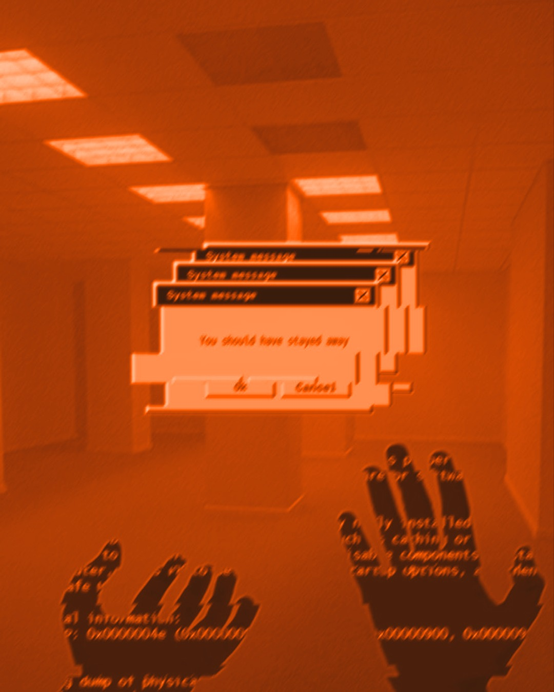

01/07
5
errores al implementar IA en tu negocio.
Casi ninguno es de tecnología. Son de orden, de medida y de personas.

Casi ninguno es de tecnología. Son de orden, de medida y de personas.

La reunión arranca con "¿usamos ChatGPT o Claude?" y nadie dice qué tarea duele.
Escribe primero la tarea: cuánto tarda y quién la hace. La herramienta se elige al final.
Cada persona hace el proceso a su manera y nadie lo tiene escrito.
Ordénalo y escríbelo a mano. Si no cabe en una hoja, todavía no se automatiza.
Tres meses después nadie sabe si la IA ahorró tiempo o solo movió el trabajo de lugar.
Antes de empezar, anota cuánto tarda hoy, cuántos errores hay y cuánto cuesta. Después compara.
El agente puede enviar correos, mover dinero o borrar datos, y nadie revisa antes.
Empieza con permisos de solo lectura y aprobación humana. Los permisos se sueltan de a poco.

Se pagan licencias que solo se usan para corregir textos.
Elige a una o dos personas, fórmalas y hazlas dueñas del proceso. La IA rinde lo que rinde quien la usa.